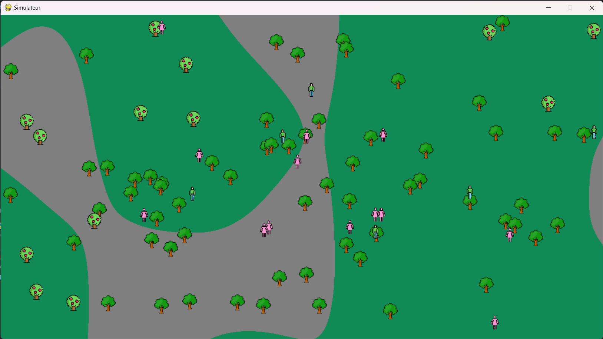

Présentation :
L’objectif principale est de faire une simulation d’une population d’humain avec de nombreux paramètre facilement modifiable. Pour cela j’ai essayé de refaire le concept de la sélection naturelle, il y a donc deux notions, la personnes peut mourir, et la personnes peut se reproduire et faire un ou des enfants avec des paramètres légèrement différents. Il faut donc que la population trouve entre un équilibre de bien manger sans pour autant avoir des caractéristiques qui lui consomme trop de nourriture.
Les humains sont définit par différentes informations qui sont :
- un objectif : soit se reproduire, soit aller chercher à manger ou errer
- une vitesse : pour aller vers un objectif
- une distance de vision : il ne vont vers un objectif si il ne voit pas
- la faim : décent en fonction de leur vision et le leur vitesse
- un âge : pour se reproduire, et pour mourir de vieillesse
Les apprentissages :
Il fait partie des premiers programmes informatique que j’ai fait en 2023 (avant ce portfolio) donc les apprentissages vont se ressembler car je ne faisait pas une observation sur mon travail.
Le nom des variables ne sont pas clair, je ne savait pas forcement comment les nommés, choisir la forme, la langue. Ce que j’en tire c’est qu’il faut mettre les constantes en majuscule, pour les autres variable il faut utiliser la forme camelCase et utiliser une seul langue.
Le fichier spécialiser pour les constantes est une bonne idée, au départ je voulais le faire en fichier texte, puis j’ai choisie un fichier python car c’est très rapide à mettre en place et qu’on voit visuellement dans un IDE. Je garde l’idée pour de petit programme simple et rapide mais un défaut c’est que lors du compilage on perd ce fichier, l’alternative donc pour les programmes plus important est l’utilisation d’un fichier JSON. Il peut être exploiter par de nombreux langages en gardant sa forme, peut être lu et modifier facilement. Mais il est plus compliqué de l’intégrer dans un programme.
Le programme est mal expliquer, dans la version du mon git pour j’ai ajouter des commentaires et un diagramme orienté objet pour que ceux qui veulent le comprendre le puissent mais sinon le programme est très peut documenté. Je sais maintenant l’importance de documenté sont code, que se soit pour le partager au autre et le comprendre après plusieurs année. Le diagramme objet quant a lui permet de voir visuellement les classes et les relations entre elles.
Le programme est très peut optimiser. Tout d’abord python est un langage orienté objet mais j’utilise l’héritage que pour la classe Humain alors que j’aurais pus le faire plus souvent. La recherche des objectifs est très laborieuse ou pour chaque humain je regarde tout les éléments de la carte.